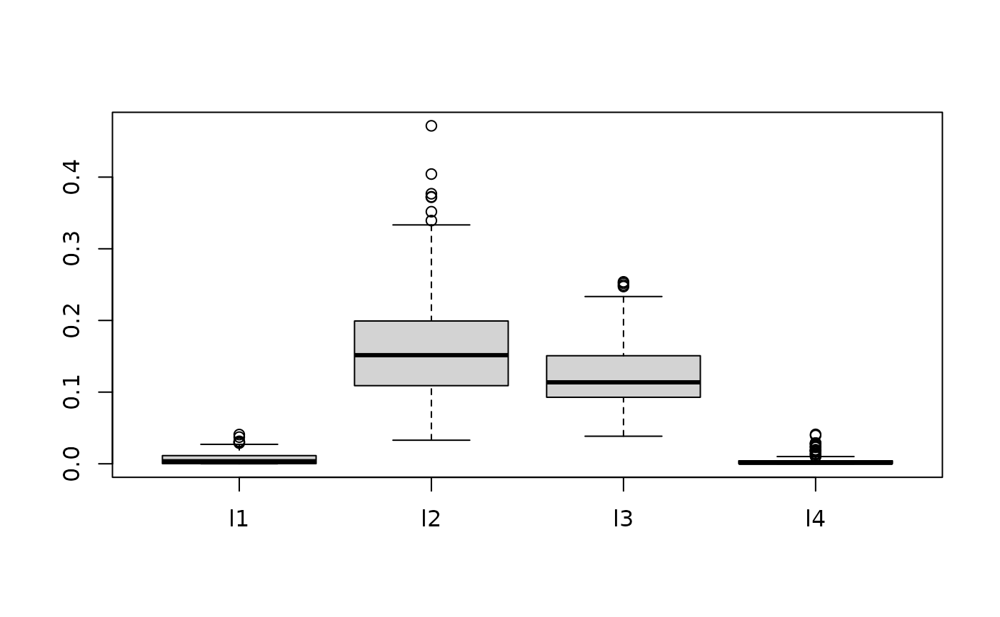
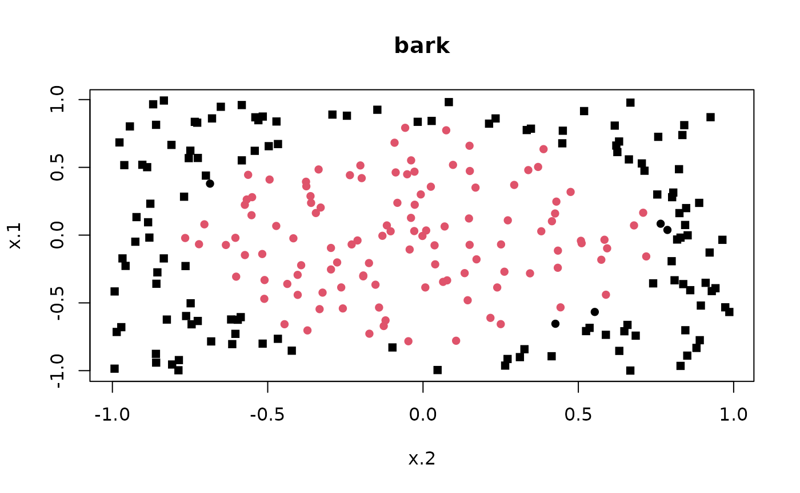
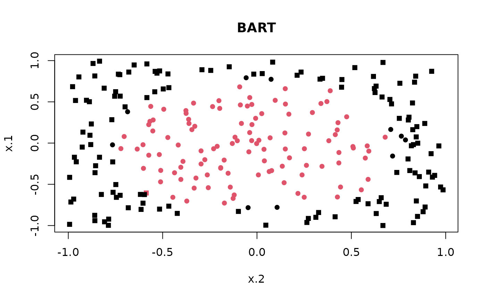

vignettes/bark.Rmd
bark.RmdBayesian Additive Regression Kernel (BARK) models are a flexible Bayesian nonparametric model for regression and classification problems where the unknown mean function is represented as a weighted sum of multivariate Gaussian kernel functions, \[\begin{equation} f(\mathbf{x}) = \sum_j \beta_j \prod_d \exp( \lambda_d (x_d - \chi_{jd})^2) \end{equation}\] that captures nonlinearities, interactions and feature selection using Levy random fields to construct a prior on the unknown function. Each kernel is centered at location parameters \(\chi_{jd}\) with precision parameters \(\lambda_d\) - these precision parameters apture the importance of each of the \(d\) dimensional predictor variables and by setting a \(\lambda_d\) to zero may remove important varialbes that are not important.
To get the latest version of {r bark}, install from github (needs compilation))
devtools::install_github("merliseclyde/bark")We will illustrate feature selection in a simple simulated example from Friedman
set.seed(42)
traindata <- sim_Friedman2(200, sd=125)
testdata <- sim_Friedman2(1000, sd=0)
set.seed(42)
fit.bark.d <- bark(y ~ ., data = data.frame(traindata),
testdata= data.frame(testdata),
classification=FALSE,
selection = FALSE,
common_lambdas = FALSE,
nburn = 100,
nkeep = 250,
printevery = 10^10)
mean((fit.bark.d$yhat.test.mean-testdata$y)^2)
#> [1] 1637.79
set.seed(42)
fit.bark.sd <- bark(y ~ ., data=data.frame(traindata),
testdata = data.frame(testdata),
classification=FALSE,
selection = TRUE,
common_lambdas = FALSE,
nburn = 100,
nkeep = 250,
printevery = 10^10)
mean((fit.bark.sd$yhat.test.mean-testdata$y)^2)
#> [1] 1441.64bark is similar to SVM, however it allows different kernel smoothing parameters for every dimension of the inputs \(x\) as well as selection of inputs by allowing the kernel smoothing parameters to be zero.
The plot below shows posterior draws of the \(\lambda\) for the simulated data.
boxplot(as.data.frame(fit.bark.d$theta.lambda))
boxplot(as.data.frame(fit.bark.sd$theta.lambda))The posterior distribution for \(\lambda_1\) and \(\lambda_4\) are concentrated at zero, which leads to \(x_1\) and \(x_2\) dropping from the mean function.
We will compare {r bark} to two other popular methods, {r BART} and {r SVM} that provide flexible models that are also non-linear in the input variables.
bart.available = require(BART)
#> Loading required package: BART
#> Loading required package: nlme
#> Loading required package: nnet
#> Loading required package: survival
svm.available = require(e1071)
#> Loading required package: e1071
set.seed(42)
n = 500
circle2 = data.frame(sim_circle(n, dim = 2))
train = sample(1:n, size = floor(n/2), rep=FALSE)
plot(x.1 ~ x.2, data=circle2, col=y+1)
circle2.bark = bark(y ~ ., data=circle2, subset=train,
testdata = circle2[-train,],
classification = TRUE,
selection = TRUE,
common_lambdas = TRUE,
nburn = 100,
nkeep = 250,
printevery = 10^10)
#Classify
#
mean((circle2.bark$yhat.test.mean > 0) != circle2[-train, "y"])
#> [1] 0.02
if (svm.available) {
circle2.svm = svm(y ~ x.1 + x.2, data=circle2[train,], type="C")
pred.svm = predict(circle2.svm, circle2[-train,])
mean(pred.svm != circle2[-train, "y"])
}
#> [1] 0.036
if (bart.available) {
circle.bart = pbart(x.train = circle2[train, 1:2],
y.train = circle2[train, "y"])
pred.bart = predict(circle.bart, circle2[-train, 1:2])
mean((pred.bart$prob.test.mean > .5) != circle2[-train, "y"])
}
#> *****Into main of pbart
#> *****Data:
#> data:n,p,np: 250, 2, 0
#> y1,yn: 1, 1
#> x1,x[n*p]: 0.205937, -0.132049
#> *****Number of Trees: 50
#> *****Number of Cut Points: 100 ... 100
#> *****burn and ndpost: 100, 1000
#> *****Prior:mybeta,alpha,tau: 2.000000,0.950000,0.212132
#> *****binaryOffset: -0.140835
#> *****Dirichlet:sparse,theta,omega,a,b,rho,augment: 0,0,1,0.5,1,2,0
#> *****nkeeptrain,nkeeptest,nkeeptreedraws: 1000,1000,1000
#> *****printevery: 100
#> *****skiptr,skipte,skiptreedraws: 1,1,1
#>
#> MCMC
#> done 0 (out of 1100)
#> done 100 (out of 1100)
#> done 200 (out of 1100)
#> done 300 (out of 1100)
#> done 400 (out of 1100)
#> done 500 (out of 1100)
#> done 600 (out of 1100)
#> done 700 (out of 1100)
#> done 800 (out of 1100)
#> done 900 (out of 1100)
#> done 1000 (out of 1100)
#> time: 0s
#> check counts
#> trcnt,tecnt: 1000,0
#> *****In main of C++ for bart prediction
#> tc (threadcount): 1
#> number of bart draws: 1000
#> number of trees in bart sum: 50
#> number of x columns: 2
#> from x,np,p: 2, 250
#> ***using serial code
#> [1] 0.044Compare classification across methods.
plot(x.1 ~ x.2, data=circle2[-train,], pch = y+15,
col=(1 + (circle2.bark$yhat.test.mean > 0)),
main="bark")
if (bart.available) {
plot(x.1 ~ x.2, data=circle2[-train,], pch = y+15,
col= ( 1 + (pred.bart$prob.test.mean > .5)),
main="BART")
}
if (svm.available) {
plot(x.1 ~ x.2, data=circle2[-train,], pch = y+15,
col= as.numeric(pred.svm),
main="svm")
}